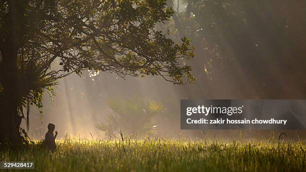

A winter morning is a cold morning of the winter season in the Bangladesh. Sometimes, it so dews.
The
environment is
dull and dismal. It is covered with mist and fog. In winter morning nature oks gloomy and everything hazy in the
Bangladesh. The sun seems to rise late. Children and old people suffer from the pinching cold of the morning.
Dew drops
fall at night, when the morning sun eps; they look like glittering pearls on grass and plants. Farmers go to the
fields
with their cows ploughs. Children and old people gather straw and make fire to warm themselves. Then people like
to eat
chira, muri, khai and various kinds of pithas. Besides date juice is very tasteful in the winter morning. People
usually
eat homemade cakes with date juice and sitting outside their homes oy the warmth of the early sun. Usually
winter
morning is comfortable for rich people. They en keep themselves under the quilt. They enjoy delicious foods and
drinks.
On the other hand the or people suffer from cold for want of warm cloths. Sometimes the dense fog in the winter
hampers
the movement of vehicles and accidents occur. However, morning fogs do not last so long. They disappear as the
sun peeps
up. The best time to visit Bangladesh is in the winter when the eather is dry and fresh. Yet tourists arriving
in
Bangladesh have been swelling in numbers day by day. They are visiting places like Cox Bazar, Teknaf, The
Sundarbans
Kuakata, Paharpur and Tetulia. The condition of birds and animals beggars description. They hid themselves from
the
biting cold outside. They feel happy to sea the rays of the sun. Dew drops make the nature charming when the ray
of the
morning sun falls on them. So winter morning is unpleasant for someone's and pleasant for the other. A winter
morning
has it's own variety and beauty. But the scene of the winter morning vanishes as the day advances.
Back to Back website